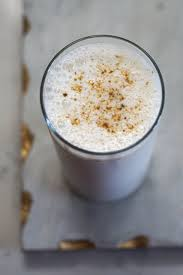

Lassi

Ingredients:
- 1 3/4 cups plain yogurt
- 6 cubes ice, crushed
- 1 1/2 cups ice water
- 2 teaspoons white sugar
- 1 pinch salt
Steps:
- In a blender, blend the yogurt, ice, water, sugar and salt until mixture becomes frothy. Pour mixture over ice cubes in tall glasses.